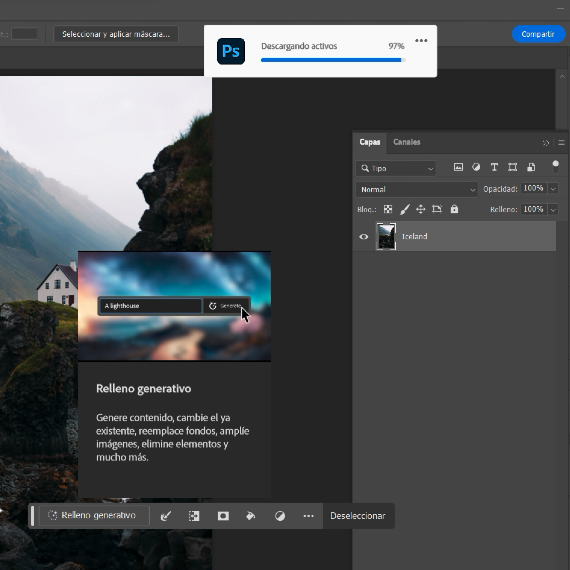
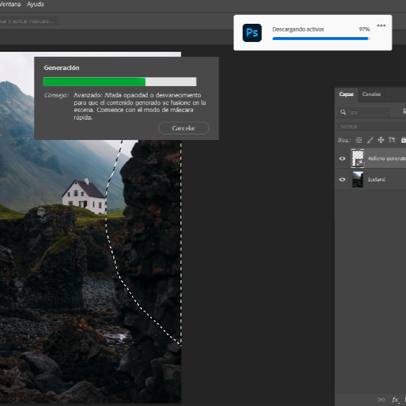
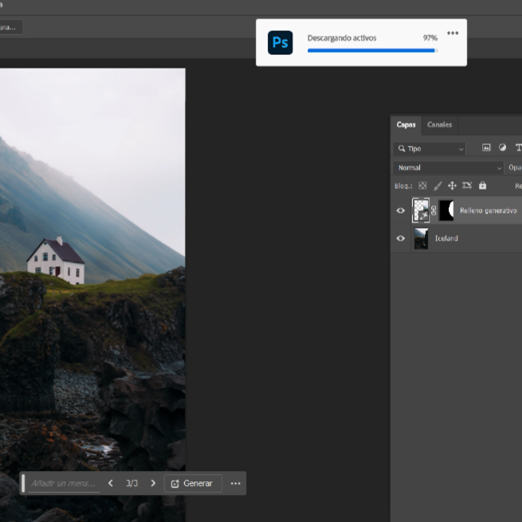
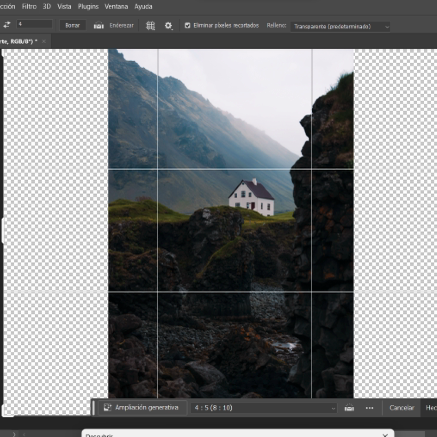
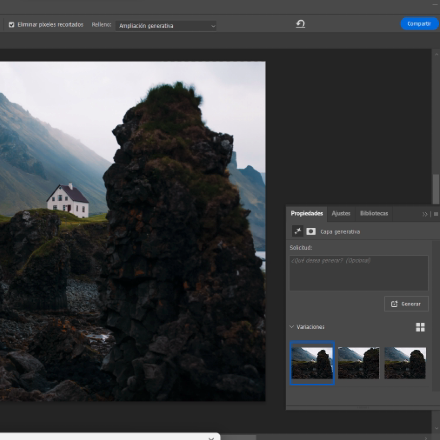
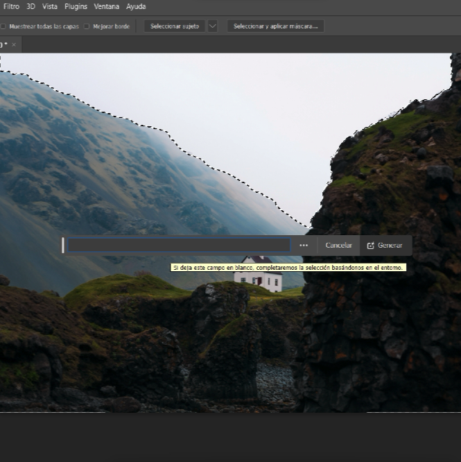
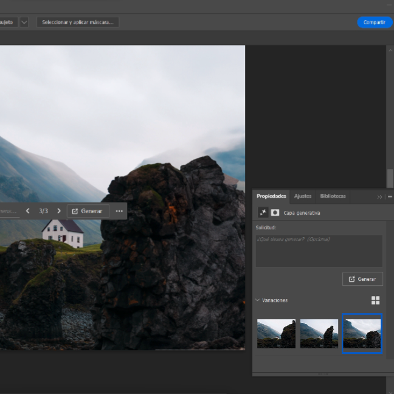

En el internet existe mucho ruido con el tema de la inteligencia artificial. Hoy en día es mas
fácil contar con una inteligencia artificial, desde tu teléfono hasta en los programas que usas
diariamente. En este caso te daremos algunos tips que puedes usar en tus trabajos de fotografía,
con ayuda de la inteligencia artificial, mas específicamente en el programa llamado Photoshop.
Normalmente para componer algún detalle mínimo o grande de una fotografía requieres de
diferentes herramientas de este programa, como el "tapon de clonar" "la malla de relleno" por
mencionar algunas, pero con la ultima actualización de Photoshop en algunas ocasiones podemos
pasar de usar estas herramientas ya que se implemento la herramienta de "relleno generativo

Esta herramienta te ayudara a generar diferentes ideas de forma rápida y creativa, desde generar
tu imagen de diferentes maneras, hasta colocar objetos con los valores correctos a la imagen,
debemos recordar que esta es una herramienta joven, en algunas ocasiones la imagen deberá tener
manipulación de tu propia mano, ya que los resultados puedan mejorarse un poco mas.
En este ejemplo podemos ver como seleccionamos cierto fragmento de la piedra lateral, y con
ayuda de la inteligencia artificial podemos generar una imagen mas limpia. al realizar esta
acción el programa te dará una diferente cantidad de opciones del trabajo artificial que genero
y será tu criterio quien elija la mejor opción

podemos observar como la inteligencia artificial realizo si trabajo de manera eficiente, y
observamos como en la barra inferior nos da el numero de opciones que tenemos para seleccionar.
Esta a tu decisión si deseas generar mas objetos dentro de tu imagen o dejarla como esta tu
imaginación es el limite.

El siguiente ejemplo se trata de rellenar nuevos espacios de la fotografía con la inteligencia
artificial, usaremos de igual manera la barra inferior donde nos da la opción de "ampliación
generativa" para que se genere de manera automática el relleno de la imagen.

tomaremos en cuenta otro ejemplo sobre el relleno generativo de Adobe Photoshop, muchas veces
los cielos de nuestras fotos pueden llegar a verse muy poco o muy recortados, o en su defecto,
poco vistosos, esto se puede corregir de la misa manera que hemos estado viendo, solo
necesitamos darle la instrucción a programa para que realice el trabajo.

podemos observar como el programa realizo varias opciones a escoger para asi nosotros hacer
nuestras correcciones a nuestro gusto

no cabe duda que la inteligencia artificial esta dando pasos muy grandes, adentrándose mas a
nuestras labores diarias como simplemente una imagen o hasta poder realizar ensayos.
